Language and Cognition Lab Fall 2018
Principal Investigator


Michael C. Frank (blog, twitter)
Mike did his undergraduate degree at Stanford in Symbolic Systems and his PhD work at MIT. He is broadly interested in the relationship between language and cognition, especially as it relates to children's early language development.
Mike did his undergraduate degree at Stanford in Symbolic Systems and his PhD work at MIT. He is broadly interested in the relationship between language and cognition, especially as it relates to children's early language development.
Postdocs

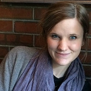
Bria Long
Bria did her undergraduate work at Stanford, and is happy to be back on campus. She spent two years at École Normale Supérieure before doing her graduate work at Harvard University. She is broadly interested in the interface between visual perception and cognition – how do we know a cup is a “cup”, and how does a baby learn what is – and what isn’t – a cup? Currently, she’s exploring if early word learning impacts how infants represent object categories.
Bria did her undergraduate work at Stanford, and is happy to be back on campus. She spent two years at École Normale Supérieure before doing her graduate work at Harvard University. She is broadly interested in the interface between visual perception and cognition – how do we know a cup is a “cup”, and how does a baby learn what is – and what isn’t – a cup? Currently, she’s exploring if early word learning impacts how infants represent object categories.
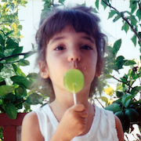
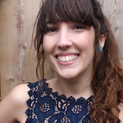
Alex Carstensen
Alex did her PhD in psychology at UC Berkeley and postdoctoral research at Radboud University in the Netherlands, focusing on the nature of category systems across languages—how these semantic structures vary, evolve, and influence thought. Her current research examines the roles of language and culture in children’s early reasoning about abstract ideas like causes, relations, and space.
Alex did her PhD in psychology at UC Berkeley and postdoctoral research at Radboud University in the Netherlands, focusing on the nature of category systems across languages—how these semantic structures vary, evolve, and influence thought. Her current research examines the roles of language and culture in children’s early reasoning about abstract ideas like causes, relations, and space.
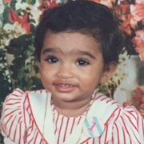

Pooja Paul
Pooja Paul received her B.A. in Linguistics and Cognitive Science from Pitzer College, and in 2018 she received her Ph.D in Linguistics from Harvard University, along with a secondary degree in Mind/Brain/Behavior. Her work investigates the interface between the compositional machinery of language and non-linguistic domains of cognition in the human mind (eg. social, event, quantitative reasoning). Her approach combines insights and methodologies from psycholinguistics, developmental psychology, and linguistic theory.
Pooja Paul received her B.A. in Linguistics and Cognitive Science from Pitzer College, and in 2018 she received her Ph.D in Linguistics from Harvard University, along with a secondary degree in Mind/Brain/Behavior. Her work investigates the interface between the compositional machinery of language and non-linguistic domains of cognition in the human mind (eg. social, event, quantitative reasoning). Her approach combines insights and methodologies from psycholinguistics, developmental psychology, and linguistic theory.
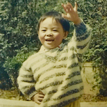
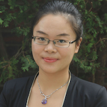
Yang Wu
Yang received her B.S. degree in Psychology from Peking University in 2012, and her Ph.D. degree in Cognitive Science from MIT in 2018. She is interested in how infants and children reason about others’ emotional displays. She is currently looking at how such ability supports their language acquisition and their understanding of the world broadly.
Yang received her B.S. degree in Psychology from Peking University in 2012, and her Ph.D. degree in Cognitive Science from MIT in 2018. She is interested in how infants and children reason about others’ emotional displays. She is currently looking at how such ability supports their language acquisition and their understanding of the world broadly.
Angeline Tsui
Angeline received her Ph.D. in Developmental Psychology from University of Ottawa in 2018. Her primary research focuses on bilingual infant language development. Before coming to Stanford, she studied how learners statistically segment words from two languages in a language mixing environment and how infants associate words with objects in the Switch task. She is now involved in multiple ManyBabies projects, with a goal of using large-scale dataset to (i) replicate key findings in infancy research and to (ii) foster best practice in research and open science.
Angeline received her Ph.D. in Developmental Psychology from University of Ottawa in 2018. Her primary research focuses on bilingual infant language development. Before coming to Stanford, she studied how learners statistically segment words from two languages in a language mixing environment and how infants associate words with objects in the Switch task. She is now involved in multiple ManyBabies projects, with a goal of using large-scale dataset to (i) replicate key findings in infancy research and to (ii) foster best practice in research and open science.
Graduate Students
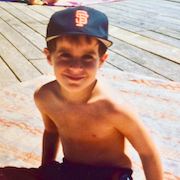
Ben Peloquin
Ben graduated with B.A. in Cognitive Psychology from Pitzer College before completing an M.S. in Symbolic Systems at Stanford. Before returning to Stanford for his PhD, Ben worked as a Machine Learning Engineer at Roam Analytics implementing NLP systems for medical data. Ben is primarily interested two questions: (1) What is the impact of language on cognition? (2) What is the impact of cognition on language? While the first question is concerned with *representation* -- how the information encoded in language influences the way we understand and perceive the world, the second is concerned with *design* -- how distributional properties found in natural languages emerge from local interactions between speakers and listeners. He focuses on computational approaches to these questions using tools from Bayesian cognitive modeling, agent-based simulation, and machine learning.
Ben graduated with B.A. in Cognitive Psychology from Pitzer College before completing an M.S. in Symbolic Systems at Stanford. Before returning to Stanford for his PhD, Ben worked as a Machine Learning Engineer at Roam Analytics implementing NLP systems for medical data. Ben is primarily interested two questions: (1) What is the impact of language on cognition? (2) What is the impact of cognition on language? While the first question is concerned with *representation* -- how the information encoded in language influences the way we understand and perceive the world, the second is concerned with *design* -- how distributional properties found in natural languages emerge from local interactions between speakers and listeners. He focuses on computational approaches to these questions using tools from Bayesian cognitive modeling, agent-based simulation, and machine learning.
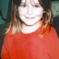
Eva Portelance
Eva completed a B.A. Honours in Linguistics and Computer Science at McGill University in 2017. She is interested in linguistic structure and computational modeling of language learning both in humans and machines.
Eva completed a B.A. Honours in Linguistics and Computer Science at McGill University in 2017. She is interested in linguistic structure and computational modeling of language learning both in humans and machines.


Rondeline Williams
Rondeline received her B.A. in Psychology from Cornell University in 2017 before completing an NIH-funded research project at The Ohio State University. She is interested in the impact of auditory noise on young children's processing efficiency and language development.
Rondeline received her B.A. in Psychology from Cornell University in 2017 before completing an NIH-funded research project at The Ohio State University. She is interested in the impact of auditory noise on young children's processing efficiency and language development.
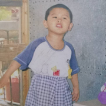
Hang Jiang
Hang did his undergrad at Emory in Computer Science and Linguistics before pursuing his M.S. degree in Symbolic Systems at Stanford. He is intrigued by two questions: 1) how humans (especially children) learn languages? 2) how we can teach machines languages? At LangCog, he focuses on applying machine learning and natural language processing in studying language learning, language variations, and pragmatic reasoning. He also did internship at the Language Technologies Institute at Carnegie Mellon, Educational Testing Service (ETS), and Apple Inc. He wants to do a PhD in NLP, CogSci, and Computational Social Science.
Hang did his undergrad at Emory in Computer Science and Linguistics before pursuing his M.S. degree in Symbolic Systems at Stanford. He is intrigued by two questions: 1) how humans (especially children) learn languages? 2) how we can teach machines languages? At LangCog, he focuses on applying machine learning and natural language processing in studying language learning, language variations, and pragmatic reasoning. He also did internship at the Language Technologies Institute at Carnegie Mellon, Educational Testing Service (ETS), and Apple Inc. He wants to do a PhD in NLP, CogSci, and Computational Social Science.
Research Staff
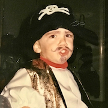
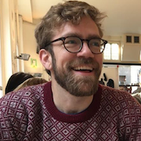
George Kachergis
George is a Research Scientist in the Language and Cognition Lab. He did his undergraduate work in Computer Science and Cognitive Studies at Carleton College, and then his PhD in Cognitive Science and Psychology at Indiana University on modeling word learning. After a postdoc at Leiden University teaching robots how to make pancakes and studying human learning of sequential action, he did a postdoc at New York University with Todd Gureckis and Marjorie Rhodes looking at how children actively select information and acquire concepts. After a stint teaching in the AI Department at Radboud University and doing research in the Donders Institute, he is excited to again be studying aspects of early language learning, including how infants actively structure their learning environment guided by curiosity and nascent knowledge.
George is a Research Scientist in the Language and Cognition Lab. He did his undergraduate work in Computer Science and Cognitive Studies at Carleton College, and then his PhD in Cognitive Science and Psychology at Indiana University on modeling word learning. After a postdoc at Leiden University teaching robots how to make pancakes and studying human learning of sequential action, he did a postdoc at New York University with Todd Gureckis and Marjorie Rhodes looking at how children actively select information and acquire concepts. After a stint teaching in the AI Department at Radboud University and doing research in the Donders Institute, he is excited to again be studying aspects of early language learning, including how infants actively structure their learning environment guided by curiosity and nascent knowledge.
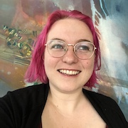
Jessica Mankewitz
Jess is the current lab manager. She recieved her B.A. in Cognitive Science from UC Berkeley where she was a research assistant in the Language and Cognitive Development Lab. She is interested in words and their meanings. Specifically, she is curious about how words and meanings are generated and how they shift and evolve through communication. Her current work explores ambiguity and polysemy in child contexts: which word meanings are children exposed to, and how do they use polysemy and ambiguity in their own speech?
Jess is the current lab manager. She recieved her B.A. in Cognitive Science from UC Berkeley where she was a research assistant in the Language and Cognitive Development Lab. She is interested in words and their meanings. Specifically, she is curious about how words and meanings are generated and how they shift and evolve through communication. Her current work explores ambiguity and polysemy in child contexts: which word meanings are children exposed to, and how do they use polysemy and ambiguity in their own speech?

Sama Radwan
Sama graduated from Emory University with a B.S. in Neuroscience and Behavioral Biology and a minor in Spanish, with a focus in linguistics. She joined the lab as the Research Coordinator. Sama completed her honors thesis exploring dissociable cognitive and neural systems for recognizing places and navigating through them. She is interested in studying both the development of language and cognitive systems as well as their breakdown in typically developing children and patient populations. Sama plans to pursue an MD-PhD.
Sama graduated from Emory University with a B.S. in Neuroscience and Behavioral Biology and a minor in Spanish, with a focus in linguistics. She joined the lab as the Research Coordinator. Sama completed her honors thesis exploring dissociable cognitive and neural systems for recognizing places and navigating through them. She is interested in studying both the development of language and cognitive systems as well as their breakdown in typically developing children and patient populations. Sama plans to pursue an MD-PhD.
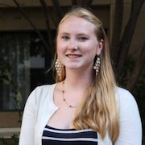
Megan Merrick
Megan graduated with a B.A. in Interdisciplinary Studies (Cognitive Development & Society) from UC Berkeley in 2018. During her undergrad career she served as research assistant in the Language and Cognitive Development Lab, as well as the Language and Development lab at UC San Diego. She enjoys research in language development but is also interested in Educational Psychology. Megan’s honors thesis was a cross cultural analysis of how young elementary school children in California and England judge their peers based on academic intelligence. She hopes to use these research experiences to pursue a PhD in Educational Psychology.
Megan graduated with a B.A. in Interdisciplinary Studies (Cognitive Development & Society) from UC Berkeley in 2018. During her undergrad career she served as research assistant in the Language and Cognitive Development Lab, as well as the Language and Development lab at UC San Diego. She enjoys research in language development but is also interested in Educational Psychology. Megan’s honors thesis was a cross cultural analysis of how young elementary school children in California and England judge their peers based on academic intelligence. She hopes to use these research experiences to pursue a PhD in Educational Psychology.
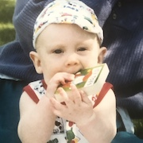
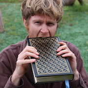
Charles Murray
Charles graduated from UC Berkeley with a B.A. in Cognitive Science in 2015. After an eventful 2 years in LA working in the entertainment industry he has returned to the Bay Area to pursue research. He is interested in the intersection between social cognition, mental illness, and cognitive neuroscience.
Charles graduated from UC Berkeley with a B.A. in Cognitive Science in 2015. After an eventful 2 years in LA working in the entertainment industry he has returned to the Bay Area to pursue research. He is interested in the intersection between social cognition, mental illness, and cognitive neuroscience.
2020 Summer Interns
- Ruby Ru - Smith College
- Yiling (Elaine) Ren - Trinity College
- Naiti Bhatt - Scripps College
- Elizabeth Swanson - Stanford University Linguistics
- Hannah Marshall - Stanford University Psychology
- Claire Baker - Stanford University Human Biology
- Isabella Duan - Stanford University Human Biology
- Gloria Yi - Stanford Univeristy Symbolic Systems
- Sophie Regan - Stanford University Symbolic Systems (M.S.)
Lab Alums
- Benny deMayo (Research Assistant) - Graduate Student, Princeton University
- Vivian Zhang (Research Assistant) - Graduate Student, Cornell University
- Erica Yoon (Graduate Student) - Teaching Coordinator for Symbolic Systems Program, Stanford University
- Judith Fan (Postdoctoral Scholar) - Assistant Professor, UC San Diego
- Manuel Bohn (Postdoctoral Scholar) - Postdoctoral Scholar, Leipzig Research Center for Early Childhood Development
- Abdellah Fourtassi (Postdoctoral Scholar) - Assistant Professor, Aix-Marseille University
- Kyle MacDonald (Graduate Student) - Postdoctoral Scholar, UCLA
- Tom Hardwicke (Postdoctoral Scholar) - Postdoctoral Scholar, Meta-Research Innovation Center, Charité – Universitätsmedizin Berlin
- Alessandro Sanchez (Research Assistant) - Software Engineer, Atomwise
- Emily Hembacher (Postdoctoral Scholar) - Data Scientist, Nextdoor
- Danielle Kellier (Research Assistant) - Medical Student, University of Pennsylvania
- Gabe Doyle (Postdoctoral Scholar) - Assistant Professor, San Diego State University
- Veronica Cristiano (Research Assistant) - Grad student, Gallaudet University
- Molly Lewis (Graduate Student) - Postdoctoral scholar, University of Chicago
- Dan Yurovsky (Postdoctoral Fellow) - Assistant Professor, University of Chicago
- Rose Schneider (Research Assistant) - Grad student, UC San Diego
- Mika Braginsky (Research Assistant) - Grad student, MIT
- Ann Nordmeyer (Graduate Student) - Assistant Professor, Southern New Hampshire University
- Sarah James (Research Assistant)
- Andrew Weaver (Research Assistant)
- Alexandra Horowitz (Graduate Student) - UI Researcher, Facebook
- Ally Kraus (Research Assistant) - Analyst, Education Elements
- Janelle Klaas (Research Assistant)
- Theresa Hennings (Research Assistant) - Grad student, University of Washington
- Stephan Meylan (Research Assistant) - Postdoctoral Scholar, Duke University
- Chigusa Kurumada (Graduate Student) - Assistant Professor, University of Rochester
- Marisa Casillas (Graduate Student) - Junior Investigator, Max Planck Institute for Psycholinguistics, Nijmegen
- Alex Stiller-Shulman (Master's Student) - Assistant Professor, San Diego Miramar College
Former Honors Students
- Allison Dods (2016) - Symbolic Systems
- Sarah Lucy Case (2015) - Human Biology
- Rachel Chung (2015) - Science, Technology, and Society
- Nicholas Moores (2015) - Linguistics
- Elise Sugarman (2014) - Symbolic Systems
- Laura Soriano (2014) - Human Biology
- Kaia Simmons (2013) - Human Biology
- Stephanie Muscat (2013) - Human Biology
- Rebecca Chung (2012) - Symbolic Systems